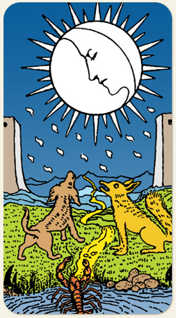

O caminho passa pelas motanhas e pode ir além delas, mostrando que a jornada do autoconhecimento vai além do que nossos olhos podem contemplar.
Se as duas torres guardam o limiar da consciência e depois delas tem um terreno rochoso, o lago é o inconsciente e as montanhas são o consciente? Gatilho que faz a pessoa virar bicho. A lua se opõe ao sol: ela é irracional e instintiva. Idealizador, hipnotismo, nostalgia, questões hormonais, questões uterinas, viver um eclipse, a fase oculta da lua. Lunação: a lua nova dispara eventos que tomam forma quinze dias depois, na lua cheia.
Onde a carta da Lua aparece, é uma área da vida da pessoa onde existe uma penumbra, algo que a pessoa não percebe ou esconde. Também faz parte do mistério da lua não se mostrar por completo.
Os raios que saem da lua também fazem referência ao sangue que jorra durante a menstruação. Diferente do Sol, fala sobre ciclos menos longos. A lua é amplamente associada à prata, que também é uma forma de se referir ao dinheiro. Na Lua e no Sol existem duas torres, enquanto na Torre existe apenas uma: existem questões que são únicas e que apenas quem está passando consegue entender, ele sente na pele, é a individualidade do sofrimento. A loucura na Lua é patológica, no Louco é inconsequência. Referência: o mito do lobisomem.
Positivo: Materialização da vontade, possibilidade de êxito após passar pelos obstáculos da Torre, magias que favorecem, colo e nutrição, gestar coisas boas, superação do medo.
Negativo: Dificuldade, paralisia, desorientação, escuridão, inconsciência, magia negativa, praga, inconstância, oscilação, mediunidade perturbada, obsessores, complicações na gestação ou na saúde dos seios, falta de conexão com o próprio inconsciente.
Amor e Sexo: Encanto, sonhos, carência, a lua me traiu, dramático, pegajoso, obsessivo, pessoa sem requinte, bobona, ligada à mãe, pode ser mimada, sonha com a família do comercial de margarina, romantiza a vida, ciúmes, romances proibidos, escondidos, sexo com olho no olho, soltar o nome do ex quando está tendo momentos de intimidade com o atual.
Trabalho e Dinheiro: Trabalhos noturnos, no escuro, oculto, trabalhar com mulheres, obstetra, ginecologista, pediatra, ocupações que causam saudade ou nostalgia, oscilações, babás, parteiras, cuidadores de idosos, pacientes psiquiátricos, ocultismo, terapias alternativas, mediunidade, ser ocultada no trabalho apesar de possuir um bom desempenho, trabalhar nos bastidores, astronautas. Dinheiro oculto ou guardado, de difícil liquidez, pratarias que foram deixadas de herança ou dadas de presente, dinheiro que chega por elos familiares ou ancestrais, cinema, projeção, teatro.
Espiritualidade: Divindades femininas, obsessão, paranóia, projeção astral. grande sensibilidade, magia, pessoa esponja, mulheres da noite, tocaias, ancestrais: principalmente os maternos, as avós, as mulheres da família, anciãs, cuidados energéticos e espirituais com o lar. Materialização de sonhos e desejos: pode garantir uma parte mas não o todo (típico da Lua ter uma lado “vazio”).
Símbolos: Lua, Yod, Cachorro, Lobo, Pedras, Lago, Lagosta, Caminho, Duas Torres, Montanhas.
Cores: Amarelo, Azul, Verde, Cinza.
Elementos: Fogo e Espírito.
Referências: Lobisômem.